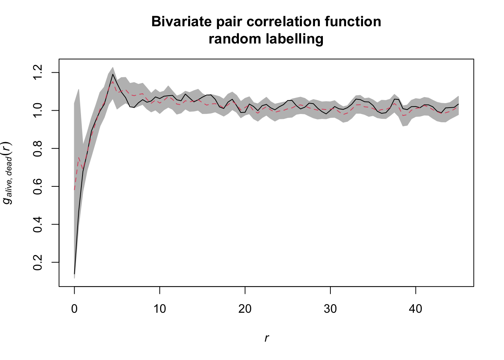
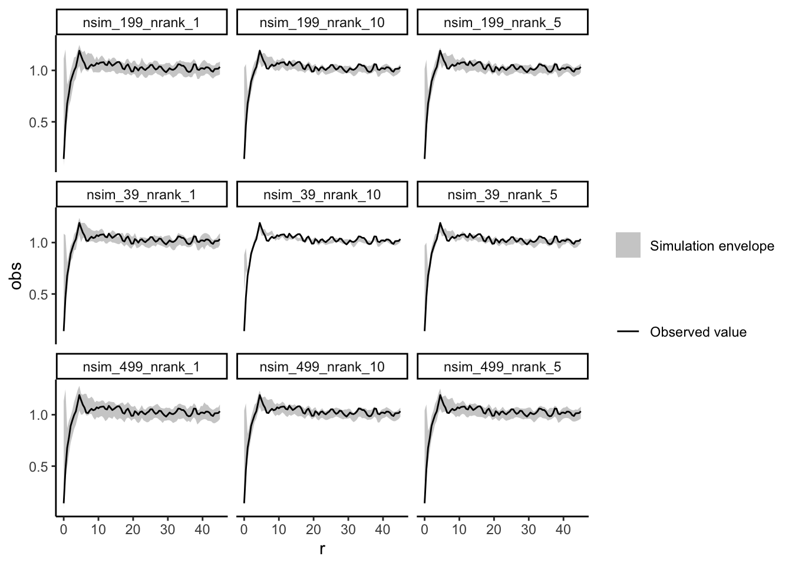
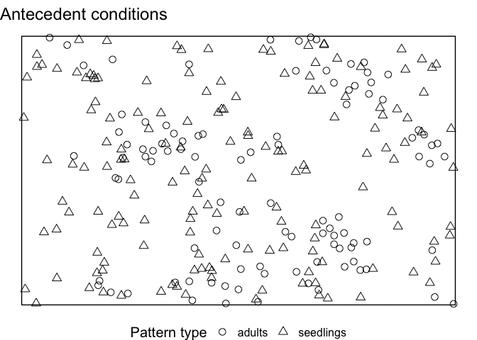
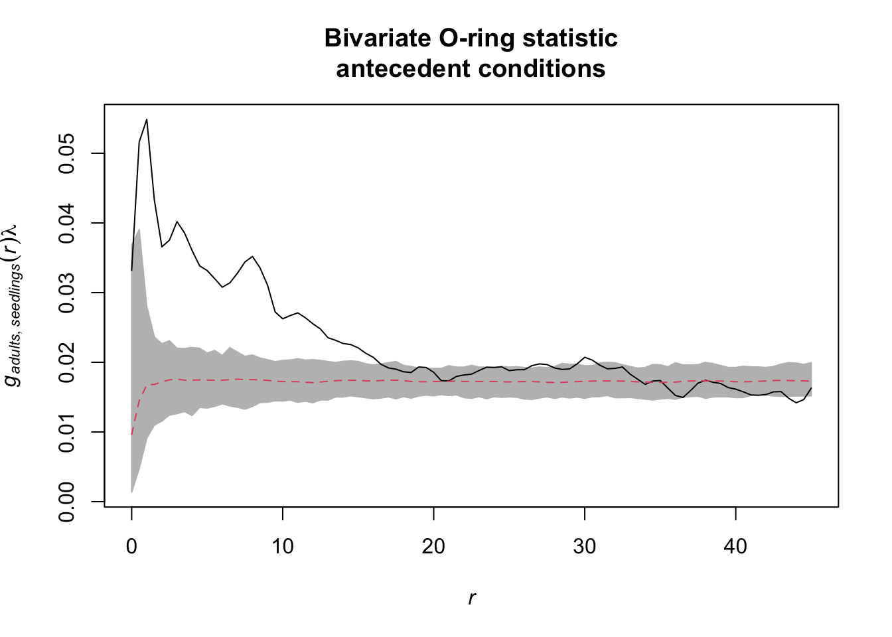
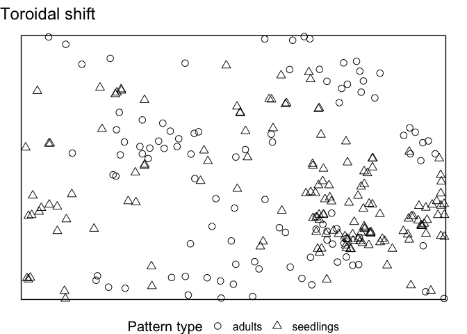

Homogenous null model
Wiegand, Getzin, Hesselbarth
Summer semester 2020

First, we load all packages, just as before.
library(spatstat)
library(tidyverse)Exercise 5
Task: Calculate the bivariate g12 function using the null model random labeling. Was the process that labeled trees as dead or alive a random process.
In case it is not in our workspace anymore, we import the data and convert it to a ppp object again.
douglas_fir <- read_delim(file = "Data/DouglasFir_LiveDead_OGN.txt",
delim = ";")
douglas_fir <- mutate(douglas_fir,
mark = case_when(mark == 1 ~ "alive",
mark == 2 ~ "dead"),
mark = as.factor(mark))
plot_area <- ripras(x = douglas_fir$x, y = douglas_fir$y,
shape = "rectangle")
douglas_fir_ppp <- as.ppp(X = douglas_fir, W = plot_area)The same goes for the O-ring statistic.
Oest <- function(input, r = NULL,
correction = "Ripley", divisor = "d", ...){
p_fct <- pcf(input, r = r,
correction = correction, divisor = divisor, ...)
lambda <- intensity(unmark(input))
eval.fv(p_fct * lambda)
}The function envelope() can also be used to simulate more complex null models than ‘CSR’ and basically all functions (fun) that return a fv object. This time, we use the bivariate pair-correlation function as fun called pcfcross in spatstat. We need to specify the arguments of pcfcross i and j indicating the two types of marks. simulate allows us to specify any possible null model as an expression. Random labeling can be simulated with the help of rlabel. Lastly, we specify the number of simulation (nsim) and the highest/lowest values to use for the envelopes (nrank) and the distances at which the function should be evaluated (r) just as before.
random_labeling <- envelope(douglas_fir_ppp,
fun = pcfcross,
i = "alive", j = "dead",
r = seq(from = 0, to = 45, by = 0.5),
divisor = "d", nsim = 199, nrank = 5,
simulate = expression(rlabel(douglas_fir_ppp)))If we visualise the null model data, we see that during the randomisation the location of all events stay unchanged and only the marks are randomly shuffled acroos the events.

The results can be visualised using the plot() function.

Exercise 6
Task: Redo the analysis from 5) and try out different settings for the number of simulations and the used lowest/highest values (e.g. n = 39, 199, 499 and lowest/highest = 1, 5, 10). Do the results change?
All we need to do is change the nsim and the nrank argument of the envelope() function and save the results in order to compare them later. In order to avoid typing the same code all the time, we are going to create a tibble with all possible parameter combinations first and then loop through this tibble. We are going to use the map() function from the purrr-package. The function is an easy way to create a loop and the result is type stable (i.e. a list). We can then convert this list to a tibble again and use e.g. ggplot2 to create a nice overview plot.
nsim <- c(39, 199, 499)
nrank <- c(1, 5, 10)
param_envelopes <- expand.grid(nsim = nsim, nrank = nrank)
param_envelopes <- arrange(param_envelopes, nsim, nrank)
random_labeling_multiple <- purrr::map(1:nrow(param_envelopes), function(i) {
as_tibble(envelope(douglas_fir_ppp,
fun = pcfcross,
i = "alive", j = "dead",
r = seq(from = 0, to = 45, by = 0.5),
divisor = "d", nsim = param_envelopes[i, 1], nrank = param_envelopes[i, 2],
simulate = expression(rlabel(douglas_fir_ppp))))
})
names(random_labeling_multiple) <- paste0("nsim_", param_envelopes$nsim, "_nrank_", param_envelopes$nrank)
random_labeling_multiple <- bind_rows(random_labeling_multiple, .id = "id") ggplot(data = random_labeling_multiple) +
geom_ribbon(aes(x = r, ymin = lo, ymax = hi, fill = "Simulation envelope"), alpha = 0.75) +
geom_line(aes(x = r, y = obs, col = "Observed value")) +
scale_fill_manual(name = "", values = c("Simulation envelope" = "grey")) +
scale_colour_manual(name = "", values = c("Observed value" = "black")) +
facet_wrap(~id) +
theme_classic()
Exercise 7
Task: Now use the data set DouglasFir_Adult_vs_Seedling_OGN. Here, pattern 1 gives the locations of adult trees and pattern 2 gives the locations of seedlings. Calculate \(O_{12}(r)\) and generate 95% confidence envelopes for the null model antecedent conditions (Pattern 1: fixed, pattern 2: random). What would be a meaningful interpretation of the results?
Firstly, we import the data and convert it to a ppp object. Also, we reclassify the mark column to 1 == ‘adults’ and 2 == ‘seedlings’ and convert it as a factor.
douglas_fir <- read_delim(file = "Data/DouglasFir_Adult_vs_Seedling_OGN.txt",
delim = ";")
douglas_fir <- mutate(douglas_fir,
mark = case_when(mark == 1 ~ "adults",
mark == 2 ~ "seedlings"),
mark = as.factor(mark))
plot_area <- ripras(x = douglas_fir$x, y = douglas_fir$y,
shape = "rectangle")
douglas_fir_ppp <- as.ppp(X = douglas_fir, W = plot_area)Now, we need to implement the bivariate O-ring statistic O12(r). We want to multiply the bivariate pair-correlation function g12(r) with the intensity of lambda2.
Oest_cross <- function(input, i, j, r = NULL,
correction = "Ripley", divisor = "d", ...){
gij <- pcfcross(input,
i = i, j = j, r = r,
correction = correction, divisor = divisor, ...)
lambda <- intensity(input)[j]
eval.fv(gij * lambda)
}spatstat has no build-in function to simulate a null model of ‘antecedent conditions’. But remember, we can give the simulate argument of the envelope() function a list of patterns. Therefore, we just need to simulate the null model and save the results in a list.
After splitting the point pattern into seedlings and adults, we create a new, random pattern with the same number of points (n) and the same observation window (win) as the seedlings. Then, we superimpose the random seedlings with the unchanged adults. Lastly, we save the result in a list.
null_model_pattern <- list()
seedlings <- subset.ppp(douglas_fir_ppp,
marks == "seedlings", drop = TRUE)
adults <- subset.ppp(douglas_fir_ppp, marks == "adults", drop = TRUE)
for (i in 1:199) {
random_seedlings <- rpoint(n = seedlings$n,
win = seedlings$window)
overall_pattern <- superimpose(adults = unmark(adults),
seedlings = random_seedlings)
null_model_pattern[i] <- list(overall_pattern)
}If we visualise the null model patterns, we can see that the location of all adult trees does not change, but the the location of all seedlings is randomised using CSR.

Now, we can compute the simulation envelopes as usually.
antecedent_conditions <- envelope(douglas_fir_ppp,
fun = Oest_cross,
i = "adults", j = "seedlings",
r = seq(from = 0, to = 45,
by = 0.5),
nsim = 199, nrank = 5,
simulate = null_model_pattern)
The onpoint package also includes an function to simulate antecedent conditions as null model (see ?simulate_antecedent_conditions for help).
Exercise 8
Task: How does the interpretation of the ‘Toroidal shift’ null model differ from the null models in 7)? What is the advantage? Is it always an advantage?
There is a possibility to simulate the ‘toroidal shift’ null model with functions provided by spatstat. We just use the function rshift() and specify the behavior at the edge of the observation area (edge) and which points should be shifted (which).
If we visualise the null model data, we see that the location of all adult trees is identical between the simulations. However, the location of the seedlings are randomised. Using the toroidal shift, you can see that the overall spatial structure of the seedlings is preserved

toroidal_shift <- envelope(douglas_fir_ppp, fun = Oest_cross,
i = "adults", j = "seedlings",
r = seq(from = 0, to = 45, by = 0.5),
nsim = 199, nrank = 5,
simulate = expression(rshift(douglas_fir_ppp,
which = "seedlings",
edge = "torus")))
References:
Baddeley, A., Rubak, E., Turner, R., 2015. Spatial point patterns: Methodology and applications with R. Chapman and Hall/CRC Press, London.
Getzin, S., Dean, C., He, F., Trofymow, J.A., Wiegand, K., Wiegand, T., 2006. Spatial patterns and competition of tree species in a Douglas fir chronosequence on Vancouver Island. Ecography, 29, 671-682.
Getzin, S., Wiegand, T., Wiegand, K., He, F., 2008. Heterogeneity influences spatial patterns and demographics in forest stands. J. Ecol. 96, 807-820.